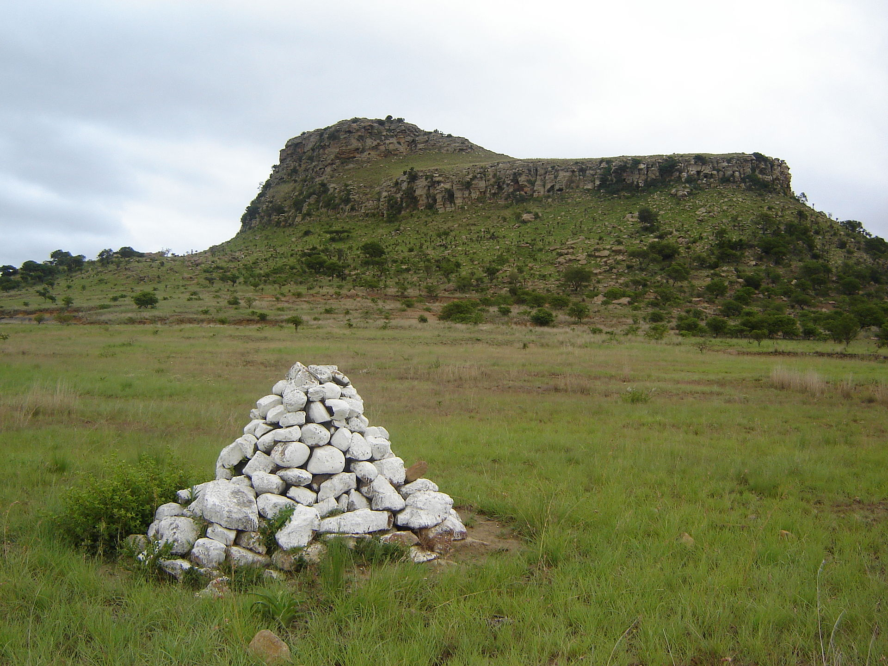

The Zulus avoided the dispersal of their main fighting force and concealed the advance and location of this force until they were within a few hours' striking distance of the British. When the location of the main Zulu Impi was discovered by British scouts, the Zulus immediately advanced and attacked, achieving tactical surprise.[85] The British, although they now had some warning of a Zulu advance, were unable to concentrate their central column. It also left little time and gave scant information for Pulleine to organise the defence. The Zulus had outmanoeuvred Chelmsford and their victory at Isandlwana was complete and forced the main British force to retreat out of Zululand until a far larger British army could be shipped to South Africa for a second invasion.[86][87][88]
Recent historians, notably Lock and Quantrill in Zulu Victory, argue that from the Zulu perspective the theatre of operations included the diversions around Magogo Hills and Mangeni Falls and that these diversions, which drew more than half of Chelmsford's forces away from Isandlwana, were deliberate.[89] Also, the main Zulu force was not unexpectedly discovered in their encampment but was fully deployed and ready to advance on the British camp. These historians' view of the expanded battlefield considers Chelmsford to have been the overall commander of the British forces and that responsibility for the defeat lies firmly with him.
Debate persists as to how and why the British lost the battle. Many arguments focus on possible local tactical occurrences, as opposed to the strategic lapses and failings in grand tactics on the part of high command under Bartle Frere and Chelmsford. Still, the latter comes under scrutiny for mistakes that may have led directly to the British defeat. The initial view, reported by Horace Smith-Dorrien, was that the British had difficulty unpacking their ammunition boxes fast enough. The box lids were screwed down, the screws were rusty and difficult to remove, there were too few screwdrivers, "standing orders" insisted that until a box was empty, no other boxes were to be opened, and the quartermasters were reluctant to distribute ammunition to units other than their own. Well-equipped and well-trained British soldiers could fire 10–12 rounds a minute. The lack of ammunition caused a lull in the defence and, in subsequent engagements with the Zulus, ammunition boxes were unscrewed in advance for rapid distribution.[91] Numerous first hand accounts indicate ammunition was available and being supplied, including Smith-Dorrien's earliest in a letter to his father.
Donald Morris in The Washing of the Spears argues that the men, fighting too far from the camp, ran out of ammunition, starting first with Durnford's men who were holding the right flank and who had been in action longer, which precipitated a slowdown in the rate of fire against the Zulus. This argument suggests that the ammunition was too far from the firing line and that the seventy rounds each man took to the firing line were not sufficient.[56][92] A different view, supported with evidence from the battlefield, such as Ian Knight and Lt. Colonel Snook's works, (the latter having written How Can Man Die Better?), suggests that, although Durnford's men probably did run out of ammunition, the majority of men in the firing line did not.
The British government's reasoning for a new invasion was threefold. The first was jingoistic to a degree and national honor demanded that the enemy, victors in one battle, should lose the war.[106] The second concerned the domestic political implications at the next parliamentary elections.[107] However, despite the new invasion, the British Prime Minister Disraeli and his Conservative Party lost the 1880 election. Finally, there were considerations affecting the Empire: unless the British were seen to win a clear-cut victory against the Zulus, it would send a signal that the British Empire was vulnerable and that the defeat of a British field army could alter policy.[108] If the Zulu victory at Isandlwana encouraged resistance elsewhere in the Empire,[109] then committing the resources necessary to defeat the Zulus would, in the long term, prove cheaper than fighting wars that the Zulu success inspired against British Imperialism elsewhere.[107][110]
After Isandlwana, the British field army was heavily reinforced and again invaded Zululand. Sir Garnet Wolseley was sent to take command and relieve Chelmsford, as well as Bartle Frere. Chelmsford, however, avoided handing over command to Wolseley and managed to defeat the Zulus in a number of engagements, the last of which was the Battle of Ulundi, followed by capture of King Cetshwayo. With the fall of the Disraeli government, Bartle Frere was recalled in August 1880 and the policy of Confederation was abandoned.[111] The British encouraged the subkings of the Zulus to rule their subkingdoms without acknowledging a central Zulu power. By the time King Cetshwayo was allowed to return home, there was no longer an independent Zulu kingdom.[112]